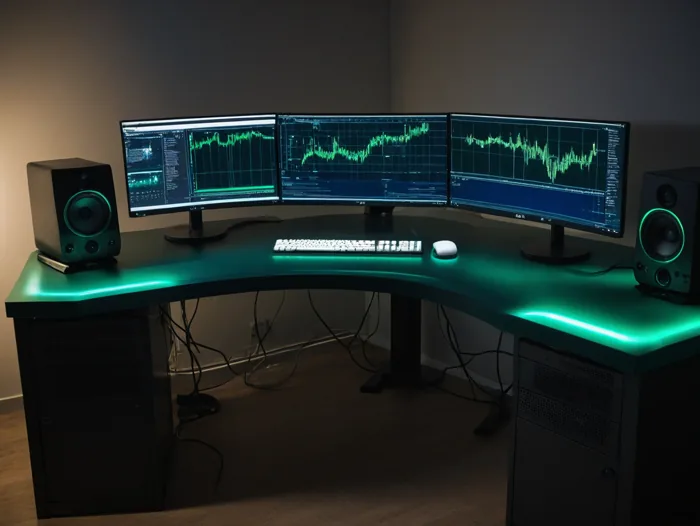

Audit & cadrage IA locale
Comprendre vos besoins, cartographier vos données, trier les cas d'usage et écrire la feuille de route.
Voir l'offre →Développement web sur mesure, automatisation et IA installée dans un environnement maîtrisé : chez vous, ou sur une infrastructure que vous validez.

Vos données sont traitées sur une infrastructure contrôlée. Tout flux vers un service extérieur est désactivable ou explicitement documenté.

Un seul interlocuteur, du cadrage à la maintenance.
Comprendre vos besoins, cartographier vos données, trier les cas d'usage et écrire la feuille de route.
Voir l'offre →Symfony et Vue.js : accessibles, rapides, bien référencés et intégrés à vos outils.
Voir l'offre →Une IA qui s'appuie sur vos documents, avec des réponses sourcées et traçables.
Voir l'offre →Des tâches répétitives confiées à des workflows, avec un point de contrôle humain.
En parler →Modèles locaux, sauvegardes, supervision, chiffrement et documentation, installés chez vous.
Voir l'offre →Mises à jour, surveillance et accompagnement dans la durée.
En parler →Aucune ligne de code n'est écrite avant un cadrage et un devis validés.
Des prix affichés, un périmètre écrit, des limites dites. Un devis détaillé suit toujours le premier échange.
« Nous ne savons pas quoi faire de l'IA, ni avec quelles données. »
« Notre site ne produit pas de demandes utiles, ou devient difficile à maintenir. »
« Nos équipes perdent du temps à chercher l'information dans nos documents. »
Projets internes du studio, pas des références clients : aucun projet client n'est encore publiable, et nous n'en inventerons pas. Chaque chiffre porte sa date de mesure.
premier mot de l'assistante, modèle local, réflexion court-circuitée
mesuré le 29/09/2026 sur le poste du studiodéfis reconnus, 0 faux défi accepté ; testé avec une voix de synthèse, l'épreuve en voix humaines reste à faire
mesuré le 29/09/2026contrôles réussis : outil non déclaré invisible, autorisation expirée refusée, espace isolé coupé du web
mesuré le 29/09/2026Ce qui est souverain aujourd'hui, et ce qui ne l'est pas encore →
Un studio indépendant et un interlocuteur unique, qui conçoit, développe et héberge des outils utiles, avec une maîtrise concrète de vos données et de l'infrastructure.
Le studio accueille ses premiers clients. Si vous voulez une IA et des outils qui travaillent chez vous, avec un accompagnement rapproché dès le premier jour, parlons-en : les conditions vous sont présentées lors du premier échange.
Échanger 30 minutes, gratuitement →Discutons de vos besoins et trouvons ensemble la solution la plus adaptée.
Prendre rendez-vous →Guides, analyses et veille autour du web, de l'IA locale et de la souveraineté numérique.